SCIENTIFIC PIPELINE V5 · FROZEN RESTORED + UNIFORM · 2 SEEDS
Фильтр NONE, неверной стороны и риска до crossing
20 сессий GCZ6, 201 480 точек: TRAIN 7, VAL 3, CAL 5, TEST 5. Исходный crossing E/D target и BCE основной модели сохранены. Замороженные TCN обучались на GCQ6; новые блоки проверяют и перенос на следующий контракт.
Отдельная MLP 32×2 получает 182 канала: текущие Micro values/masks, внутреннее состояние замороженной TCN, её вероятности и сторону, причинные отношения риска к G. Максимум подробной истории — 300 секунд. Полный банк Rich из 225 фич сохранён, но дневные/VWAP/STFT каналы в этот fit не входят.
L = BCE(E) + I(E)·BCE(C) + I(E∧C)·[BCE(S₂)+BCE(S₄)+BCE(S₆)]/3, затем сумма по батчу делится на число известных E. C — правильность уже выбранной базовой стороны. S — отсутствие достижения −R до первого qualifying crossing. S не означает прибыль фактического выхода.
Во всех вариантах доступен только прежний кандидат base score ≥0.35. Фильтр не меняет сторону. Semantic rank = qE·qC; risk rank = qE·qC·qS. Порог берётся на CAL, будущее состояние crossing не участвует в replay.
Это новые даты для scientific V3/V4; исторически нетронутый holdout не заявляется: старый cognition код назначал август в TEST. Пять TEST-дней дают ограниченную оценку устойчивости.
Вывод после независимых проверок
Фильтр не показал экономического преимущества. На заранее выбранном сравнении cost2/CAL50 оба фильтра ухудшили полный TEST net относительно базы в обоих seeds. Seed17 CAL выбрал одинаковый для всех вариант cost6/retain100% — фильтрация отключена; TEST −25.30. Seed29 выбрал WAIT.
При одинаковом числе TEST-сигналов семантический отбор улучшает seed17 и ухудшает seed29. Добавление risk-головы не даёт устойчивого повышения safe precision. Пять TEST-дней и смена контракта ограничивают переносимость выводов.
Глобальная метрика не описывает множество входов. Внутри base-кандидатов направление уже различается лучше случайного, но head риска cost2 заметно слабее, чем на всех правильных сторонах. Фильтр обучался на всех известных TRAIN-точках; сам генератор предложил только 400/2410 TRAIN-кандидатов и 514/4178 TEST-кандидатов.
Следующая проверяемая гипотеза: согласовать обучение и калибровку фильтра с распределением предложенных входов и отдельно проверить более широкий отбор кандидатов. Текущие результаты не обосновывают подбор focal loss. Этот опыт завершён без изменения TEST-порогов или повторного fit по увиденным результатам.
Заранее выбранное сравнение: cost2, 50% CAL-кандидатов
Порог переносится на TEST как число; фактическое число TEST-сигналов может различаться. Суммы в USD на reference ounce.
Политика, выбранная только на CAL
Для допуска требуется полный положительный CAL net и ≥50 сделок. Иначе WAIT. Hash — только контроль и не выбирается как политика.
- Seed 17, base: positive_complete_CAL; cost6, threshold 0.000000; TEST 93 trades, net -25.30.
- Seed 17, semantic: positive_complete_CAL; cost6, threshold 0.000000; TEST 93 trades, net -25.30.
- Seed 17, risk: positive_complete_CAL; cost6, threshold 0.000000; TEST 93 trades, net -25.30.
- Seed 29, base: WAIT_no_positive_complete_CAL_with_50_trades; cost2, threshold 1.010000; TEST 0 trades, net 0.00.
- Seed 29, semantic: WAIT_no_positive_complete_CAL_with_50_trades; cost2, threshold 1.010000; TEST 0 trades, net 0.00.
- Seed 29, risk: WAIT_no_positive_complete_CAL_with_50_trades; cost2, threshold 1.010000; TEST 0 trades, net 0.00.
Обучение и выбор checkpoint
Основные TCN заморожены. Учится только MLP-фильтр; checkpoint выбран по VAL. Head NLL условны и имеют разные знаменатели.
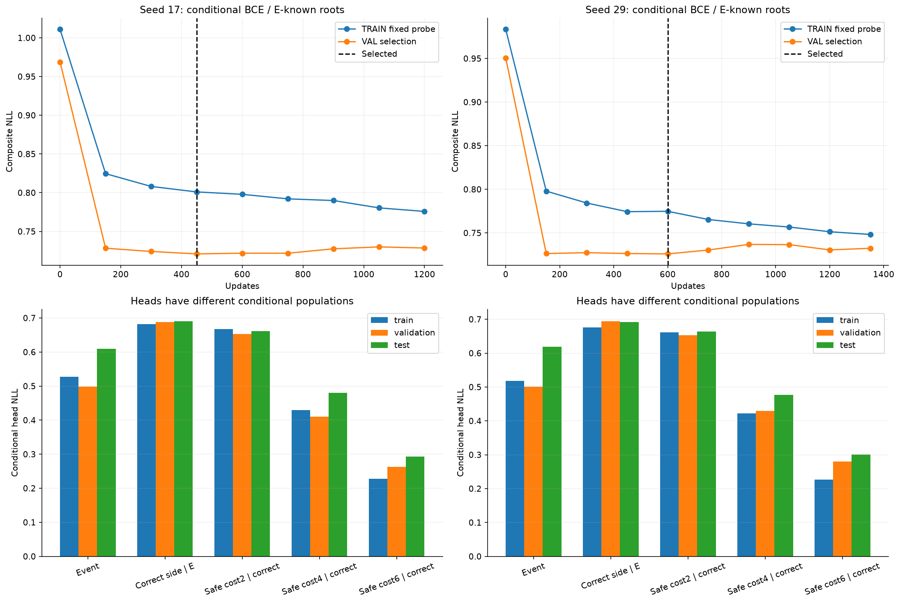
Распределение меток и градиентов
UNKNOWN и неактивные условные головы дают нулевой градиент. Это производная loss по logit; не производная временного ряда таргета.
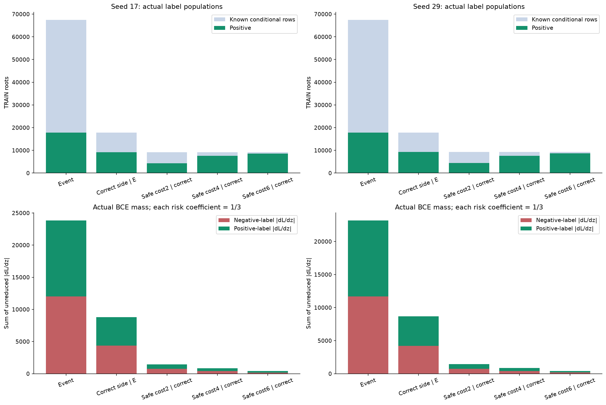
Отбор при разных бюджетах сигналов
Все пороги заморожены на CAL. Их перенос на TEST меняет число сигналов; кривые показывают это явно. Hash control разрежает сигналы без знания исходов.
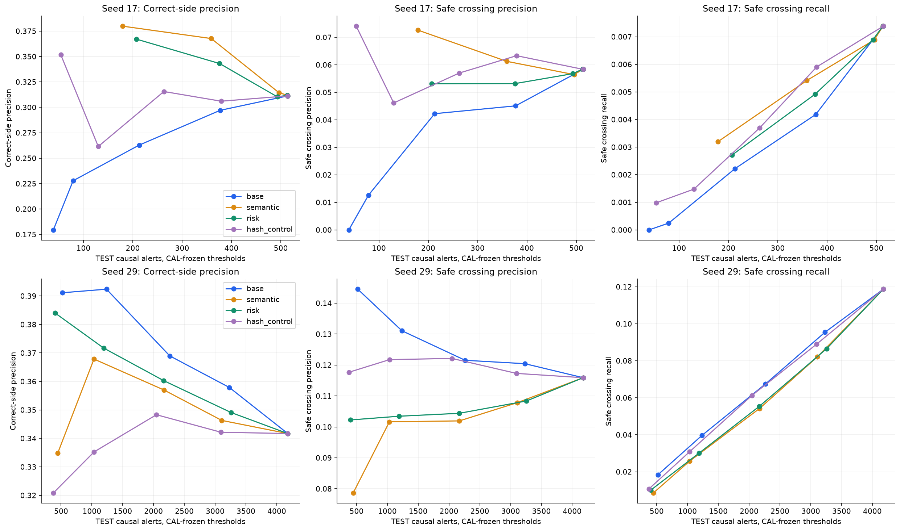
NONE, неверная сторона и риск до crossing
Верх: применимые CAL-пороги. Низ: одинаковое число TEST-точек по ретроспективному ranking, только диагностика селективности; эти пороги не участвуют в торговом replay.
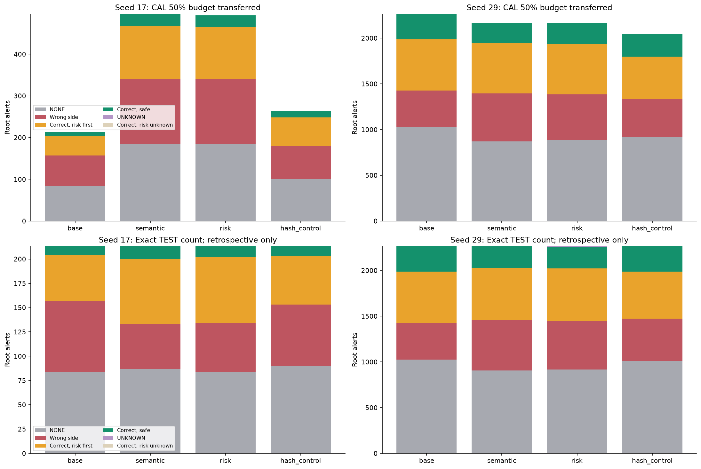
Калибровка условных вероятностей
Показаны только bins с ≥20 известными примерами. q_safe условна на правильную сторону; её нельзя читать как вероятность прибыльной сделки.
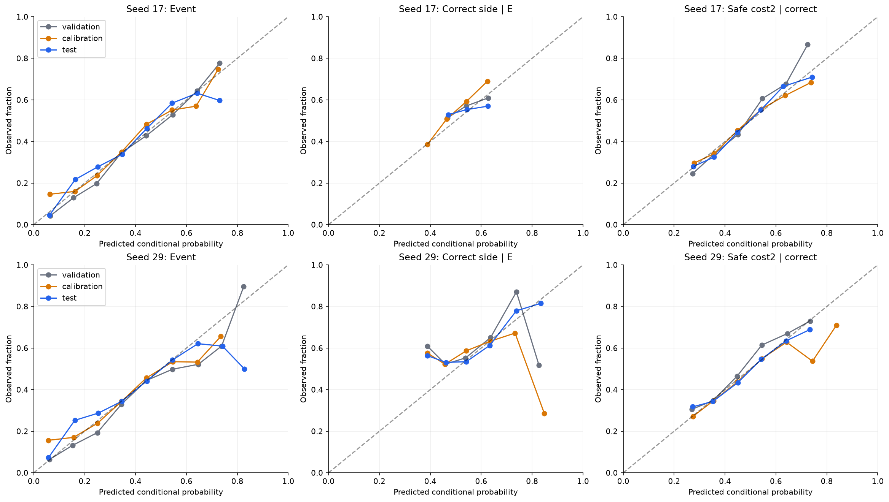
Последовательная экономика
Однопозиционный счёт, taker BBO, комиссия 0.3 и задержка 100 ms. CENSORED останавливает счёт; частичный cash не выдаётся за итог. Разные фильтры меняют занятость позиции.
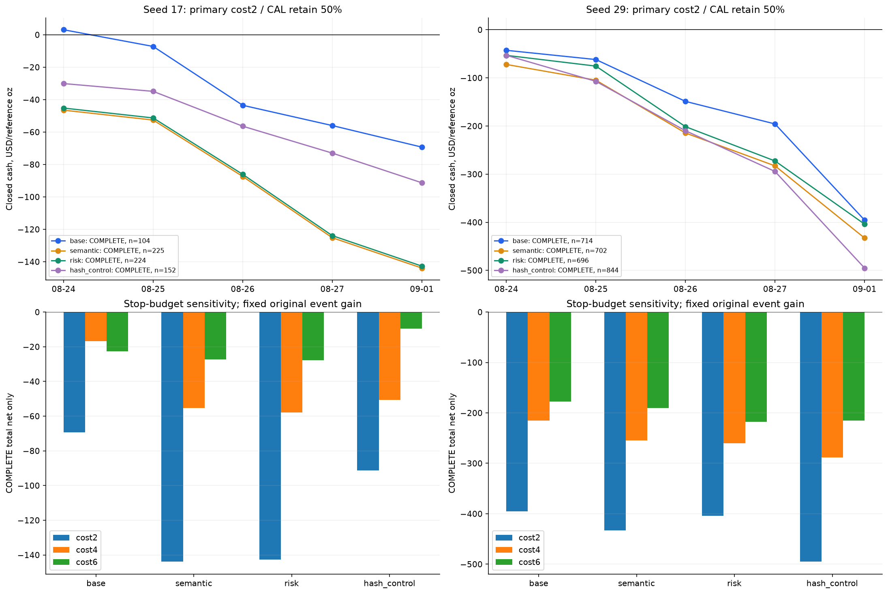
Сигнал, таргет и градиент: 2026-08-24, seed 17
Окно выбрано до fit. Точки не сглажены. Серый градиент основной модели — диагностический: backbone не обновлялся. Цветные производные соответствуют сохранённому BCE фильтра.
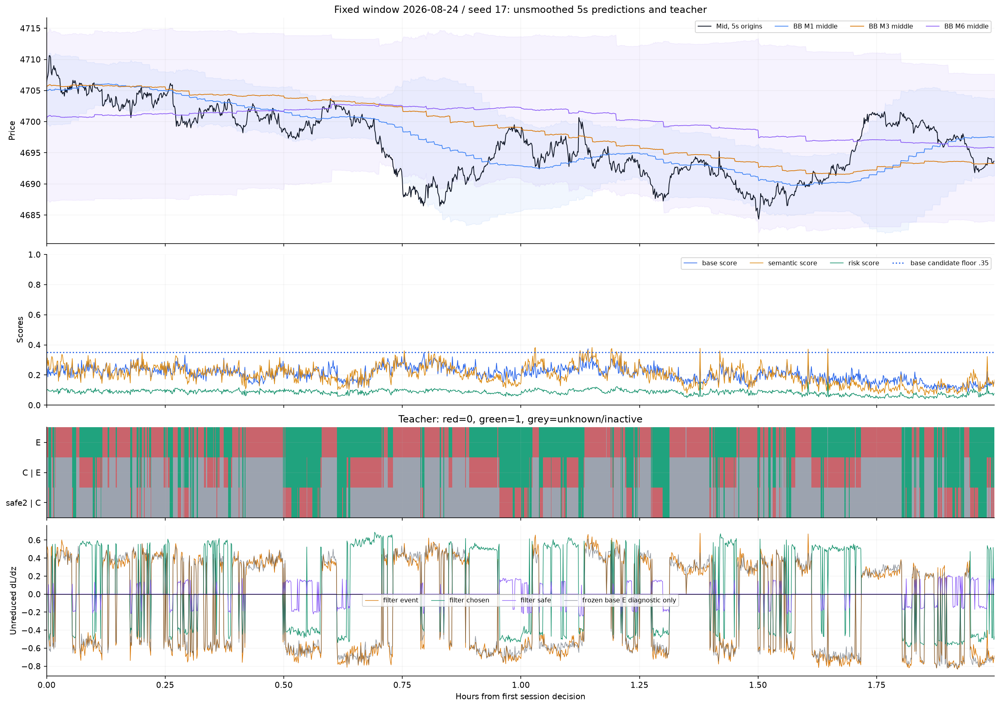
Сигнал, таргет и градиент: 2026-09-01, seed 17
Окно выбрано до fit. Точки не сглажены. Серый градиент основной модели — диагностический: backbone не обновлялся. Цветные производные соответствуют сохранённому BCE фильтра.
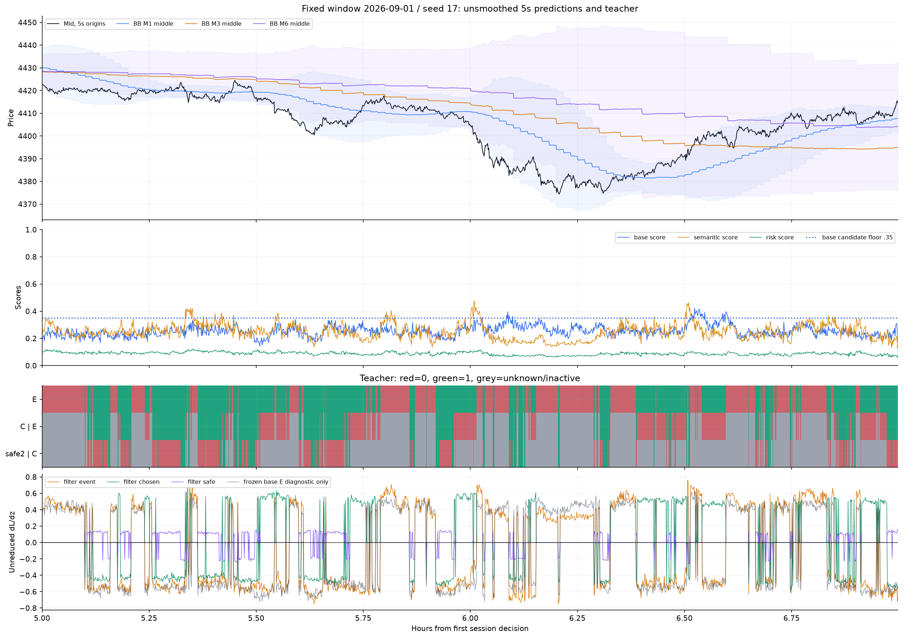
Сигнал, таргет и градиент: 2026-08-24, seed 29
Окно выбрано до fit. Точки не сглажены. Серый градиент основной модели — диагностический: backbone не обновлялся. Цветные производные соответствуют сохранённому BCE фильтра.
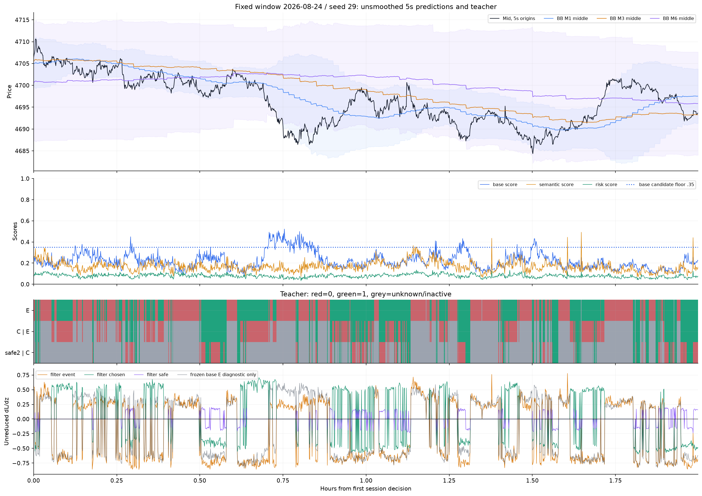
Сигнал, таргет и градиент: 2026-09-01, seed 29
Окно выбрано до fit. Точки не сглажены. Серый градиент основной модели — диагностический: backbone не обновлялся. Цветные производные соответствуют сохранённому BCE фильтра.
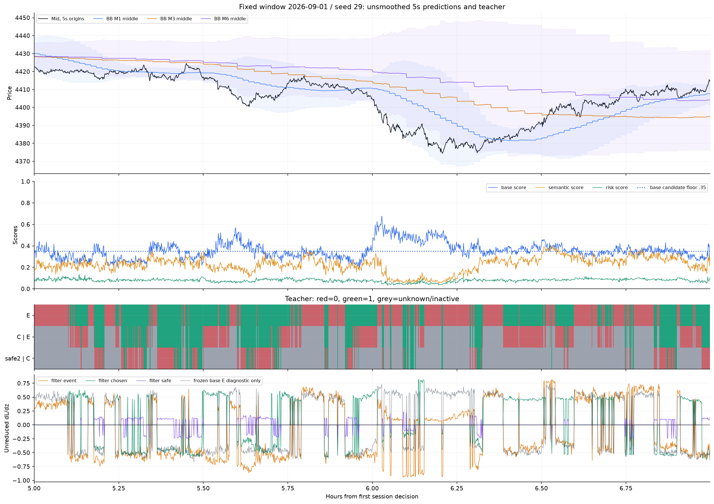
Путь сделки: CORRECT_RISK_FIRST
Первый по времени подходящий пример, без выбора по PnL. Линия после фактического выхода — контрфактический mark исходного входа; она показывает crossing, но не продолжение счёта.
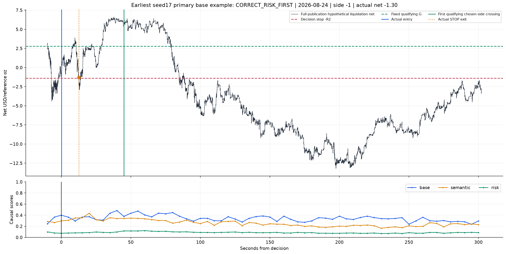
Путь сделки: NONE
Первый по времени подходящий пример, без выбора по PnL. Линия после фактического выхода — контрфактический mark исходного входа; она показывает crossing, но не продолжение счёта.
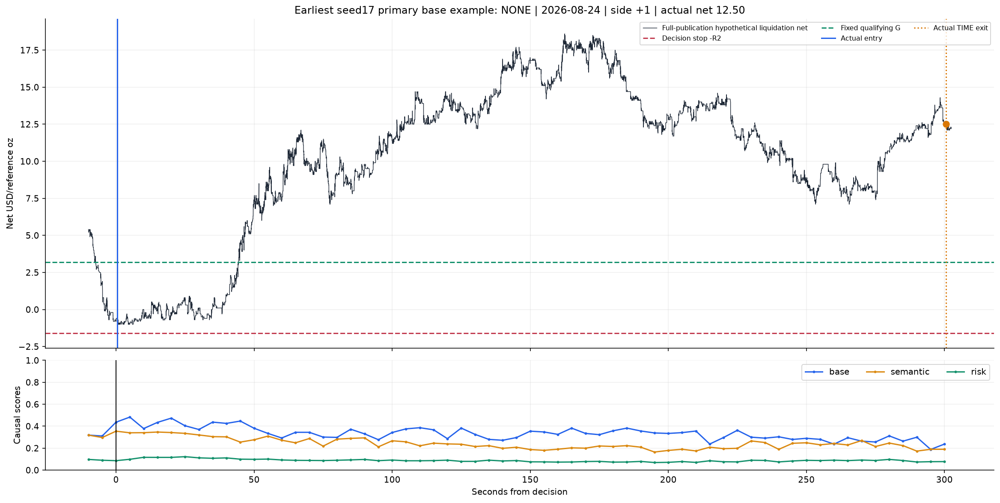
Путь сделки: WRONG_SIDE
Первый по времени подходящий пример, без выбора по PnL. Линия после фактического выхода — контрфактический mark исходного входа; она показывает crossing, но не продолжение счёта.
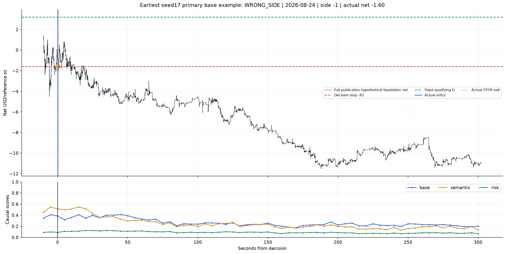
Путь сделки: CORRECT_SAFE
Первый по времени подходящий пример, без выбора по PnL. Линия после фактического выхода — контрфактический mark исходного входа; она показывает crossing, но не продолжение счёта.
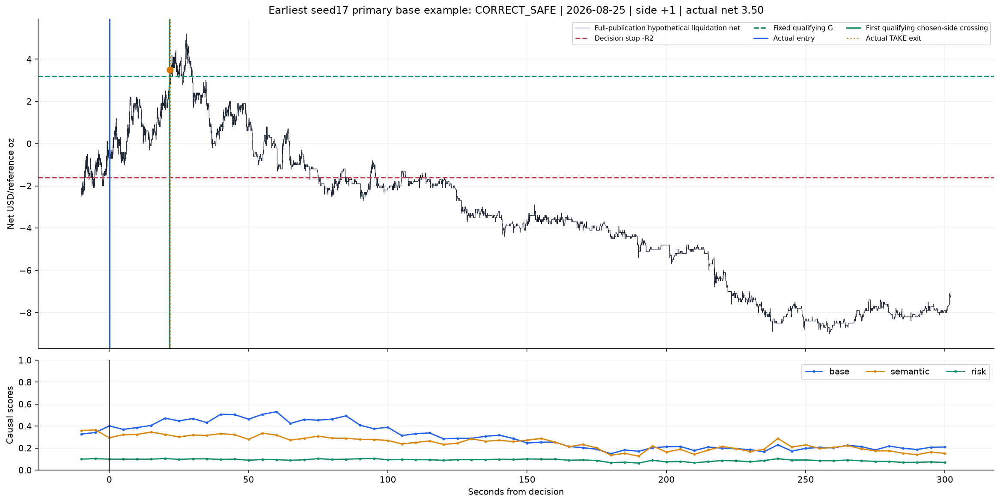
Что доходит до отдельного фильтра
Порог base ≥0.35 зафиксирован до опыта. График диагностический: показывает потерю доступных возможностей до фильтра; порог после просмотра TEST не менялся.
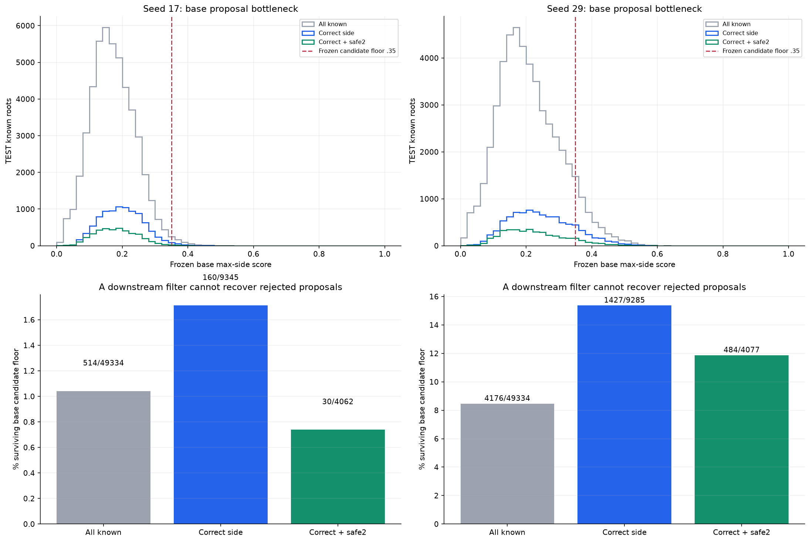